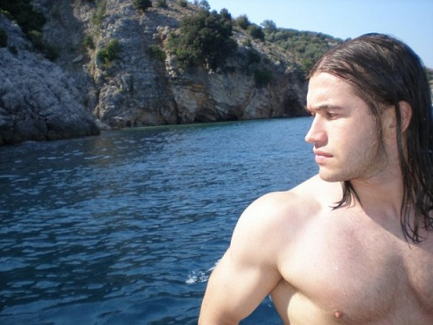

Spriječite gubitak mišićne mase - bezbrižno na godišnji!
Prije godišnjih odmora, na svim bodybuilding forumima svijeta nastaje panika. Ljudi se boje da će u desetak dana izgubiti mišićnu masu koju su gradili mjesecima. Traže teretane u blizini mjesta gdje ljetuju, nose opremu za trening sa sobom, izmišljaju programe sklekova i plivanja kako bi održali mišićnu masu. Moj pristup je takav da godišnji odmor služi za odmor i oporavak. Mjesecima bez prestanka maltretiramo zglobove i tetive. Desetak dana bez teretane je baš ono što tijelu treba. Proces izgradnje mišićne mase je dugotrajan i jedna kratka pauzica neće napraviti štetu.

Odmor uz ribolov
Postoji način da tijekom odmora, u periodu bez treninga, mišićna masa raste. To postižemo pametnim pretreniravanjem. Generalno, pretreniranost je negativan pojam. Treningom tijelo zapravo oštećujemo. Tijekom odmora tijelo se oporavlja i obrambenim mehanizmima raste veće i jače kako bi sljedeći put bolje podnijelo trening. Trenirajući previše, tj. odmarajući se premalo, tijelo iz treninga u trening ne stiže popraviti oštećenja. Dolazi do gubitka mišićne mase, kojeg se svi jako bojimo. Zašto bih ja onda to ikome preporučio?
Ako stanje pretreniranosti ne traje previše dugo i ako nakon njega slijedi adekvatno dug period odmora, dolazi do superkompenzacije. To znači da obrambeni mehanizmi koji tijelo čine većim i jačim rade bolje nego kod standardnog, linearnog pristupa treningu. Većina vrhunskih trenera u svim sportovima koriste periode jako visokog intenziteta, volumena ili frekvencije treninga, nakon kojega slijedi period manjeg intenziteta ili odmora, takozvani "deload".
Ovaj program zahtjeva od vas da trenirate 4 dana u tjednu, 2 puta na dan. Idealno bi bilo da su treninzi odvojeni barem 6 sati. Trajanje ovog programa je 2 tjedna, a rijetki su oni koji će preživjeti 3 tjedna. Znači, 2 tjedna prije godišnjeg odmora odradite ovaj program i sa godišnjeg odmora ćete se vratiti veći i snažniji.
Terminologija
8x4 znači 8 serija po 4 ponavljanja
kod vježbi odvojenih slovima A, B, C… rade se sve serije jedne vježbe, nakon čega se prelazi na sljedeću vježbu
parovi vježbi označeni s A1, A2,…C1, C2, izvode se na način da izvedemo prvo vježbu 1, nakon čega slijedi propisani odmor, pa vježbu 2, pa opet odmor, pa nazad na vježbu 1. Kada napravimo sve serije za par A1, A2, prelazimo na par B1, B2…
prvi dio dana se odrađuje ujutro, drugi dio dana popodne ili navečer; primjer za Dan 1: 8x4 (8 serija po 4 ponavljanja) radimo u prvom dijelu dana, a 4x8 (4 serije po 8 ponavljanja) u drugom dijelu dana
Napomena
Ovaj program je izuzetno težak, fizički i psihički. Fizički zbog bolova koje ćete osjećati u svakom mišiću tijela. Psihički, jer je izuzetno teško natjerati tako izmoreno tijelo na još jedan trening, na još jednu seriju, na još jedno ponavljanje.